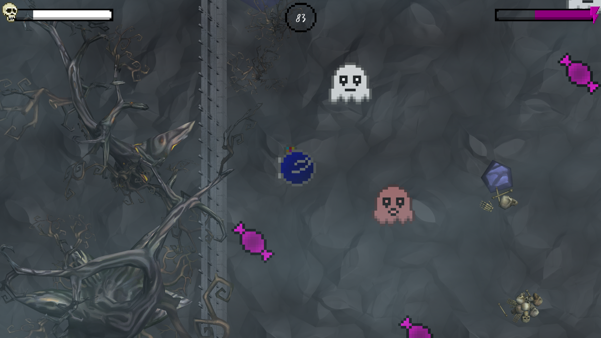
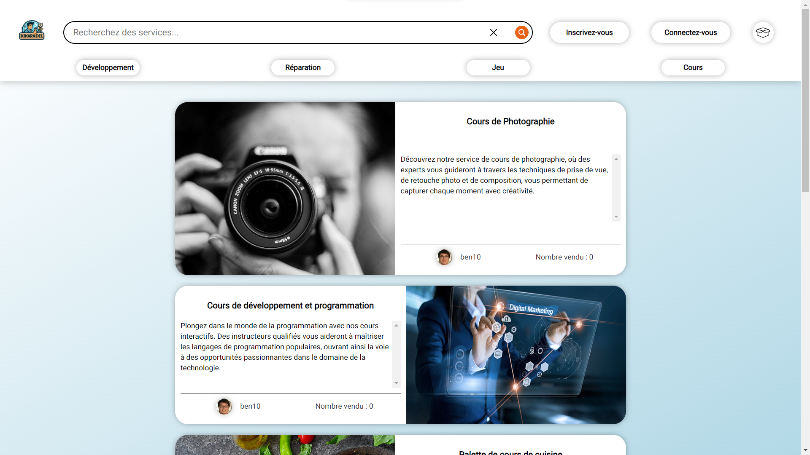
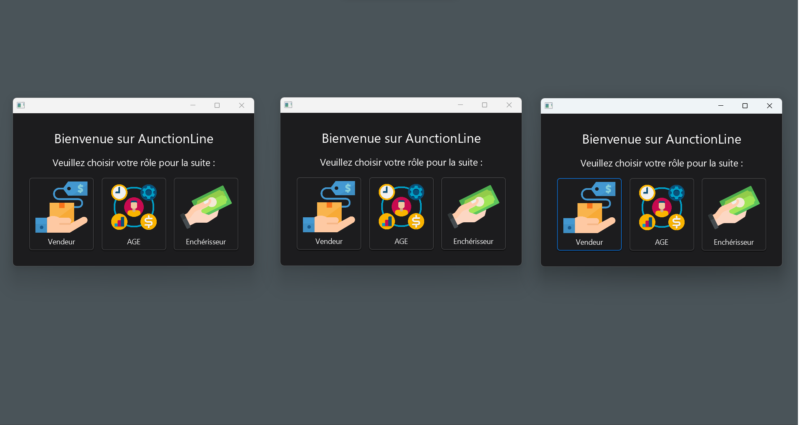

Mon parcours au sein du BUT Informatique m'a offert une multitude d'opportunités pour développer et mettre en pratique diverses compétences essentielles. À travers une série de projets, j'ai pu explorer et renforcer mes connaissances dans des domaines clés, tout en acquérant une expérience pratique précieuse.
Lors d'une Gamejam d'Halloween, j'ai plongé dans le monde du développement de jeux vidéo en collaborant avec un partenaire. Nous avons utilisé le langage C# et le moteur Unity pour créer un jeu de survie sur le thème "Trick or Treat". Cette expérience m'a permis d'aborder la programmation orientée objet et de mettre en pratique des concepts tels que l'héritage, l'encapsulation et le polymorphisme pour développer des fonctionnalités complexes, notamment la génération de fantômes ennemis. En plus de maîtriser le langage de programmation, j'ai dû optimiser le code pour assurer des performances fluides, en tenant compte des contraintes matérielles et des exigences de jeu.
De même, lors de l'implémentation en Java du jeu de plateau "Les Aventuriers du Rail", j'ai travaillé en étroite collaboration avec un partenaire pour concevoir et développer une application fonctionnelle. Nous avons dû choisir judicieusement les structures de données et les algorithmes pour gérer efficacement le déroulement du jeu. Le processus de développement a été étroitement surveillé et géré grâce à l'utilisation de systèmes de gestion de versions tels que GitLab, ce qui a facilité la collaboration et la coordination entre les membres de l'équipe.
Dans le cadre de la réalisation d'un site web pour un concept d'eCommerce, j'ai été confronté au défi de gérer des informations pouvant se rattacher à des utilisateurs comme leur mot de passe. Travaillant en équipe de trois personnes, nous avons utilisé des langages de balisage tels que HTML et des feuilles de style CSS pour créer une interface utilisateur attrayante et intuitive. De plus, nous avons mis en place une base de données pour stocker les données relatives aux utilisateurs, les produits les commandes, etc. Nous avons veillé à en respectant les réglementations sur le respect de la vie privée et la protection des données personnelles.
De même, lors d'un projet en première année, j'ai participé à l'élaboration d'une base donnée complète de A à Z en respectant les méthodes de création efficaces des bases de données et en y gardant une cohérence. Ce projet se base sur un premier petit cahier des charges. Dans la finalité, nous devions rendre un schéma complet de la base de données afin de mieux la visualiser.
La réalisation de projets tels que Sida'dventure et NaturaGames a été une opportunité d'approfondir mes compétences en gestion de projet. Travaillant en équipe, nous avons conçu et développé des sites web pour sensibiliser respectivement au VIH et à la cause climatique. Ces projets ont nécessité une planification minutieuse, une coordination efficace des efforts d'équipe.
De plus, l'utilisation de méthodes de gestion de projet agiles telles que Scrum a été nécessaire afin de bien organiser et suivre le développement de projet de manière itérative. C'est notamment cette méthode que nous avons utilisée lors de notre projet AunctiOnline. En assumant le rôle de Product Owner, j'ai acquis une expérience précieuse dans la coordination entre l'équipe de développement et le client, la communication des besoins et des exigences du projet, ainsi que la prise de décisions stratégiques pour garantir le succès du projet.
